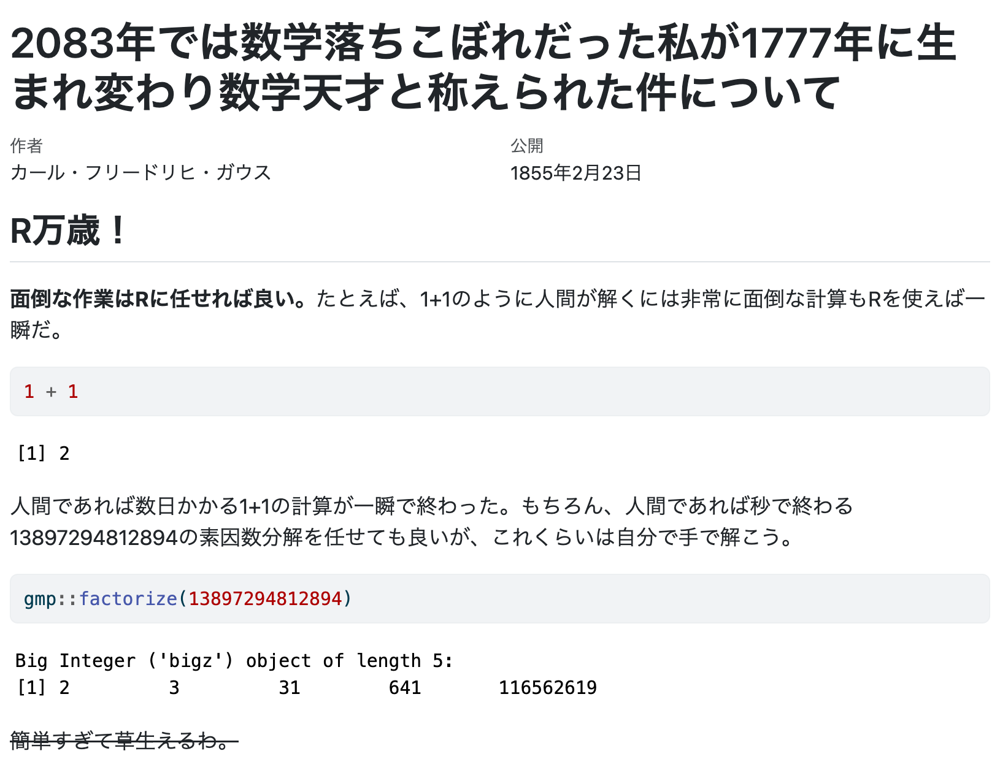
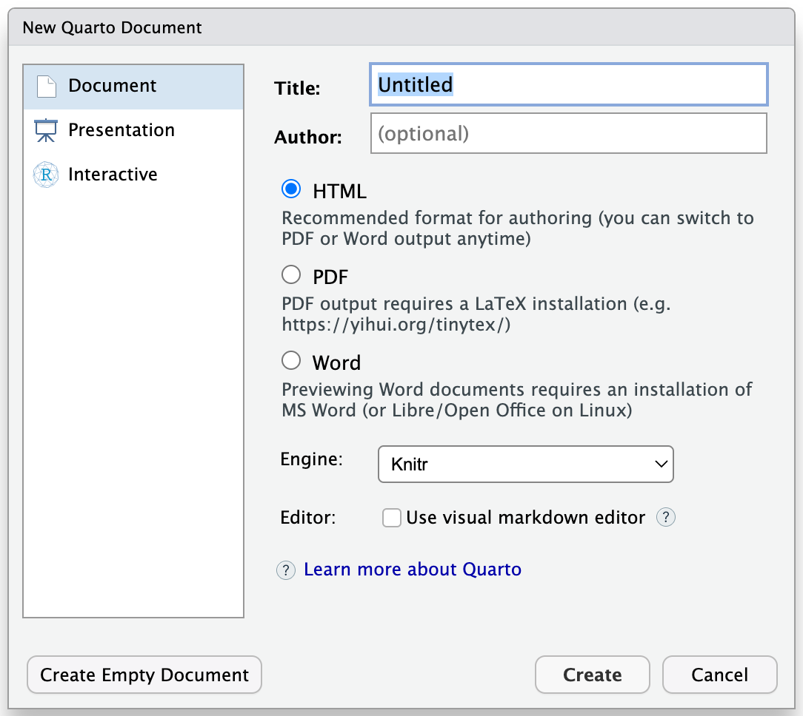
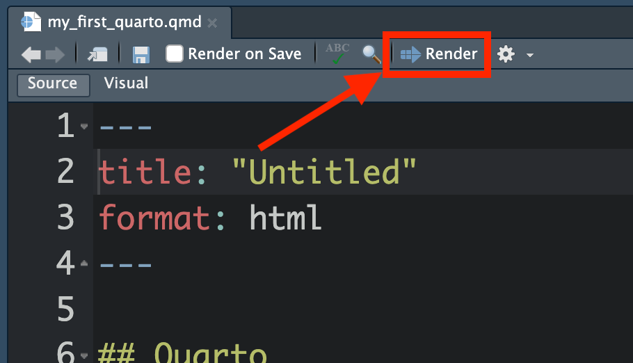
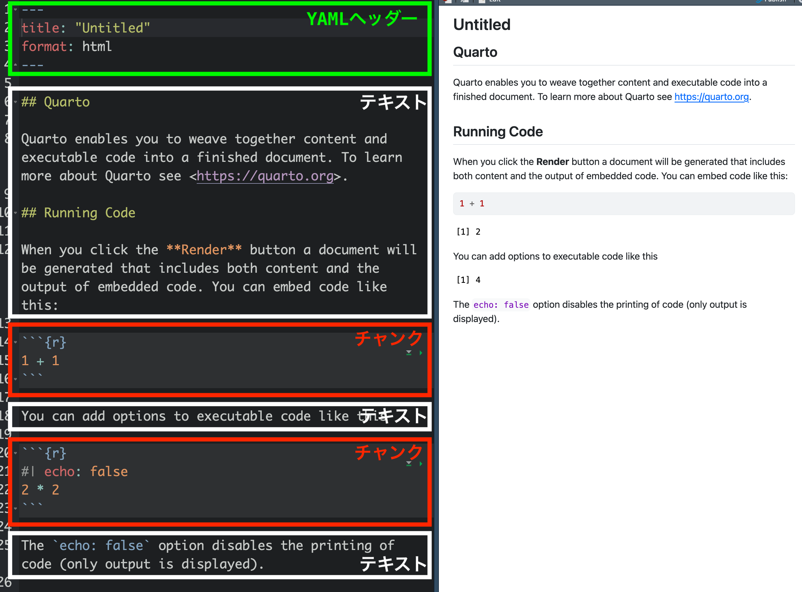
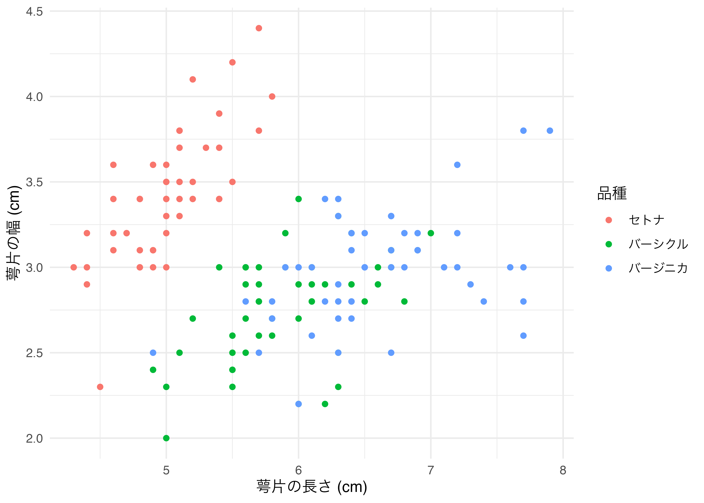
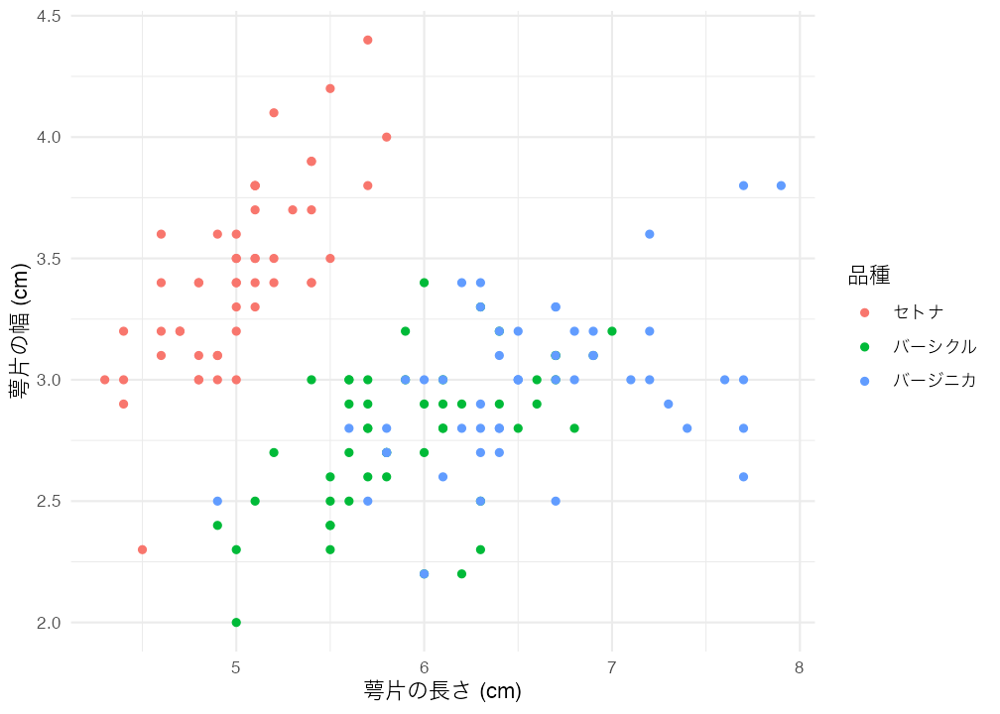

[1] "Hello World!"付録 F — Quarto [1]
本項目は執筆途中です！
本章は完成後、既存のR MarkdownとQuartoの内容の一部を代替しますが、現時点では参考程度にしてください。
F.1 Quartoとは
QuartoはPandocベースのオープンソース科学/技術出版システムであり、Rコードと結果、文章を一つの文書としてまとめてくれるものだ。Rのコードと実行結果、そしてテキストなどが一つの文書でまとまったもの、そうだ、『私たちのR』もまたQuartoで作成されている。『私たちのR』のようにHTML形式でWebサイトとして公開することもでき、他のもPDFやMicrosoft Wordのようなスタンドアロンのドキュメントファイルとして公開することもできる。
また、本書の読者であればPython、JuliaといったR以外の言語も使用する（予定がある）可能性が高いが、Rコードだけでなく、PythonやJuliaのコードも文書内に入れることができる。
Quartoで作成された文書のソースコードを見ると、大きく3つの領域に分けられる。それはYAMLヘッダー、チャンク、それ以外の領域（テキスト）だ。YAMLヘッダーは文書のタイトル、著者、作成日などのメタ情報と文書全体のフォーマットやスタイルを指定する内容でJSONに類似したYAML形式で書き、メタ情報を除き、コンパイルした文書には表示されない。チャンクはR（他にもPython、Julia、Mermaid、Observable等）コードが入る領域で、コンパイルするとコードとその実行結果が表示される。これら2つは明確に領域を宣言する必要があり、具体的にYAMLヘッダーは---と---の間に、チャンクは```{r}と```の間に書く必要がある。以下のコードはQuartoで作成された文書のコードであるが、1行目から7行目までがYAMLヘッダー、13〜15行目と19〜21行目がチャンクだ。この2つの領域外の内容はテキストであり、Markdown文法に則って書く。
---
title: 2083年では数学落ちこぼれだった私が1777年に生まれ変わり数学天才と称えられた件について
author: カール・フリードリヒ・ガウス
date: 1855/2/23
format: html
lang: ja
---
## R万歳！
**面倒な作業はRに任せれば良い。**たとえば、1+1のように人間が解くには非常に面倒な計算もRを使えば一瞬だ。
```{r}
1 + 1
```
人間であれば数日かかる1+1の計算が一瞬で終わった。もちろん、人間であれば秒で終わる13897294812894の素因数分解を任せても良いが、これくらいは自分で手で解こう。
```{r}
gmp::factorize(13897294812894)
```
~~簡単すぎて草生えるわ。~~
文書全体のフォーマット、スタイルを指定するだけのYAMLヘッダーを除けば、QuartoはRコードとMarkdown文法で作成されたテキストで構成されたものと言える。
F.1.1 R Markdownとの違い
以上の話を考えると、「なんだ、R Markdownと同じじゃないか！」と思う読者もいるだろう。その判断は7割くらいは正しく、QuartoとR Markdownはほぼ同じ目的のために開発されたものだ。目的が同じである以上、R Markdownを問題なく使いこなしているのであれば、Quartoの学習はさほど難しくないし、そもそもQuartoに乗り換える必要もあまりない（かも知れない）。ただし、筆者（宋）は今後、QuartoがR Markdownに代わる主流になると考えているため（そうでないと考えている方も大勢にいる）、本書ではR Markdownでなく、Quartoを紹介する。むろん、別の名前が付いてある以上、Quarto = R Markdownではない。文法などの違いは本章の中盤以降に説明するとして、まず両者の技術的な面での違いを紹介する。
一点目は使用可能なエンジンだ。たとえば、R Markdownは.Rmdをknitrエンジンを経由し、コードとその結果物が含まれた.mdファイルを生成する。ここで生成された.mdファイルはPandocを経由して最終的にはHTML、PDF、Microsoft Wordファイルに変換される（ 図 F.1 (a) ）。Quartoも基本的に同じである。ただし、knitrエンジン以外にもPython、Juliaで多用されるJupyterやJavaScripベースのObservableもエンジンとして使用可能という特徴がある（ 図 F.1 (b) ）。使用可能なエンジンが多いということはRコード以外にもPyhton、Julia、Observable JSのコードも使えるといったメリットがある。また、使用可能なエンジンは今後のアップデートで追加される可能性もある。ちなみにQuartoにはMermaid、GraphVizが実装されており、以下のようなダイアグラム作成も別途の設定なしで簡単にできる。
flowchart LR
A[.Rmd] --> B[knitr]
B --> C[.md]
C --> D{Pandoc}
D --> E(HTML)
D --> F(PDF)
D --> G(Microsoft Word)
D --> H(Etc.)
flowchart LR
A[.qmd] --> B[knitr]
A --> C[Jupyter]
A --> D[Observable JS]
A --> E[Etc]
B --> F[.md]
C --> F
D --> F
E --> F
F --> G{Pandoc}
G --> H(HTML)
G --> I(PDF)
G --> J(Microsoft Word)
G --> K(Etc.)
二点目は様々なフォーマットが統合されている点だ。R Markdownだと文書を作成する場合は{rmarkdown}パッケージ、ホームページを作成するなら{blogdown}パッケージ、スライドを作成するなら{xaringan}等のパッケージを使うことになる。しかし、Quartoはプラスアルファのパッケージを使わず、Quarto単体で様々なフォーマットが作成できる1。ここまで聞くとR Markdownの方がより拡張性に優れているように見えるが、QuartoもまたQuarto Extensionを通じて様々な拡張機能が導入できる2。また、Lua言語の知識があれば、自分で拡張機能を作成することができる。
三点目はIDEだ。R Markdownの場合、ほぼRStudio一度（他のIDEでももちろん出来る）であったが、QuartoだとVisual Studio CodeやJupyter、NeoVim、Emacs、SublimeTextも使用可能であり、RStudioとほぼ変わらない使用経験を提供する（ 図 F.2 ）。


しかし、QuartoはR Markdownの上位互換でもなく、R Markdownを代替するものでもないことには注意されたい（参考）。つまり、既存のR Markdownを問題なく使っているのであれば、Quartoへの移行は不要だろう。現在のところ、QuartoはR Markdown生態系を一つに統合したものに近く、文法などもほぼ同じであるため、移行のために新しい事をゼロベースから勉強する必要はほぼない。
F.1.2 なぜQuarto/R Markdownを使用するか
再現・再生可能性について意識高い話をここでする。
F.2 はじめてのQuarto
F.2.1 事前準備
Quartoを使う前に以下の3つの項目を確認する必要がある。
1つ目はQuarto CLIのインストールだ。Quarto CLIは公式ホームページからダウンロードできる（https://quarto.org/docs/get-started/）。macOS、Linux、Windows版が提供されているため、自分のOSに合わせてダウンロードし、インストールしておこう。最新のRStudioにはQuartoが内蔵されているが、最新版が内蔵されているわけではない。むろん、新機能にこだわりがないのであれば、最新のRStudioをインストールするだけでも十分だ。
2つ目はRStudioを最新バージョンにアップデートすることだ。RStudioで本格的にQuartoが使えるようになったのはRStudio 2022.07からである。基本的に現時点での最新版をインストールしておけば問題ないだろう。
3つ目はRパッケージ{quarto}のインストールだ。こちらはインストールするだけで十分で、別途読み込む必要がない。
F.2.2 とりあえずRender
それではQuartoがどんなものか味わってみよう。まず、メニューのFile > New File > Quarto Documentを選択する。以下のような画面が表示されるが、Use visual markdown editorのチェックを外し、Createをクリックする。

テンプレのようなファイルが生成されるが、適当な名前を付けて保存し、Sourceペイン上段のRenderボタン3をクリックする（ショートカットキーはmacOSはCmd + Shift + K、その他のOSはCtrl + Shift + K）。

クリック数回で以下のような綺麗な文章が作成され、Viewerペインに表示される（RStudioの設定によっては新しいウィンドウで表示される場合もある）。

---と---の間の領域がYAMLヘッダーであり、ここでは文書のタイトル（title:）と出力フォーマット（format:）が指定されている。YAMLヘッダーは1つの.qmdファイルにおいて1箇所のみ、しかもファイルの最上段に位置する。続いて、```{r}と```の間の領域がチャンクであり、このファイルには2つのチャンクがある。最初のチャンクは1 + 1の演算を行うチャンクであり、2つ目のチャンクでは2 * 2の演算を行う。ただし、2つ目のチャンクはコードは表示せず（#| echo: false）、結果のみを出力する。YAMLヘッダー、チャンク以外の領域はテキストであり、Markdown文法で記入される。たとえば、##が付いていれば見出し、<と>で囲まれたURLはクリック可能なURLに、**と**の間の文字は太字になる。
F.3 Markdown
F.3.1 Markdownとは
これまで頑張って無視してきたものがある。それがMarkdown（）だ。John GruberとAaron Swartzが2004年提案した軽量Markup言語だが、そもそもMarkup言語とはなんだろう。
Markup言語を知るためにはプレーンテキスト（plain text）とリッチテキスト（rich text、またはマルチスタイルテキスト）の違いについて知る必要がある。プレーンテキストとは書式情報などが一切含まれていない純粋なテキストのみで構成された文書だ。書式情報とは文書の余白、文字の大きさ、文字の色、図表などがある。これまでRStudio上で書いてきたRコードもプレーンテキストだ。コードに色が自動的に付けられるが、これはRStudioが色付けをしてくれただけで、ファイル自体はテキストのみで構成されている。macOSのTextEdit、Windowsのメモ帳、Linux GUI環境のgeditやKATE、CLI環境下のvim、Emacs、nanoなどで作成したファイルは全てプレーンテキストだ。これらのテキストエディターには書式設定や図表の挿入などの機能は付いておらず、文字しか書けない。
一方、リッチテキストとは書式情報だけでなく、図表なども含まれる文書を指す。Microsoft WordやPages、LibreOffice Writerから作成したファイルなどが代表的な例だ。これらのワードプロセッサーソフトウェアは書式の設定や図表・リンクの挿入などができる。そして、Markup言語とはプレーンテキストのみでリッチテキストを作成するための言語です。
Markup言語の代表格の言語がHyperText Markup Language、略してHTMLだ。読者の皆さんがウェブブラウザから見る画面のほとんどはHTMLで書かれている。この『私たちのR』もHTMLだ。この文書には図表があり、太字、見出し、水平線など、テキスト以外の情報が含まれている。しかし、HTMLは純粋なテキストのみで書かれており、ウェブブラウザ（Firefox、Chrome、Edgeなど）がテキストファイルを読み込み、解釈して書式が付いている画面を出力してくれているだけだ。例えば、リンク（hyperlink）について考えてみよう。「SONGのHP」をクリックすると宋のホームページに移動する。ある単語をクリックすることで、他のウェブサイトへ飛ばす機能を付けるためにはHTMLファイルの中に、以下のように記入する必要がある。
これをウェブブラウザが自動的に「SONGのHP」と変換し、画面に出力してくれるわけだ。これは、書式情報などが必要な箇所にコードを埋め込むことによって実現される。そして、このMarkup言語をより単純な文法で再構成したものがMarkdownだ。例えば、以上のHTMLはMarkdownでは以下のように書く。
同じ意味のコードだが、Markdownの方がより簡潔に書けることが分かるだろう。このMarkdownは最終的にHTMLやMicrosoft Word、PDF形式で変換される。一般的にはHTML出力を使うが、自分のPCに\(\LaTeX\)環境が構築されている場合はPDF形式で出力することも可能であり、個人的には推奨しないが、Microsoft Word文書ファイルへ変換することも可能だ。また、HTML（+ JavaScript）へ出力可能であることを利用し、スライドショー、e-Book、ホームページの作成にもMarkdownが使える。
Markdown記法は一つだけではない。Pandocの開発者で有名なJohn MacFarlaneが主導して制定したCommonMarkが多くのMarkdown記法のベースとなるが、機能に制約がある（たとえば、表が作れないなど）。他にもいくつかの流派があり、Markdown編集ソフトウェア独自の使用が追加されているケースもある。Markdownが流行るほど生態系の断片化は避けられないが、GFM（GitHub Flavored Markdown）と呼ばれる書き方であり、 こちらが現在の主流である。本書で紹介するMarkdown記法もGFMと「ほぼ」一致しており、どのMarkdown編集ソフトウェアでも同じ動作をするだろう。他にもQuartoはGFMでは作成できないコールアウトやタブセットのような便利な機能も提供しているが、これらの内容は次章以降で紹介する。
F.3.2 Markdown記法
Markdown記法について実際の書き方（Input）と、出力画面（Output）を対比しながら解説していきます。
F.3.2.1 改行
Markdownにおける改行はやや特殊だ。特殊といっても難しいことはない。普段よりもう一行改行するだけだ。Markdownの場合、1回の改行は改行として判定されず、同じ行の連続と認識する。たとえば、Inputのように入力するとOutputのように文章1と文章2が繋がってしまう。
文章1と文章2を改行するためには以下のように、もう一行改行する必要があります。
こうすることで段落間の間隔を強制的に入れることとなり、作成者側にも読みやすい文書構造になる4。
F.3.2.2 強調
文章の一部を強調する方法として太字、イタリック5、アンダーラインがあり、強調ではないが、ついでに取り消し線についても紹介する。いずれも強調したい箇所を記号で囲むだけだ。
F.3.2.3 箇条書き
箇条書きには順序なし（unordered）と順序付き（ordered）がある。順序なしの場合*または-の後に半角スペースを1つ入れるだけだ。また、3文字以上の字下げで入れ子型の箇条書きにすることもできる。
Output:
- 項目1
- 項目1-1
- 項目1-2
- 項目1-2-1
- 項目1-2-1-1
- 項目1-2-2
- 項目1-2-1
- 項目2
- 項目3
続いて、順序付き箇条書きの場合、これは-（または*）を数字.に換えるだけだ。順序なしの場合と違って数字の後にピリオド（.）が付くことに注意すること。数字は1.、2.、…とせず、1.、1.、…でも問題ない。
F.3.2.4 見出し
章、節、段落のタイトルを付ける際は#を使う。#の数が多いほど文字が小さくなる。章の見出しを##にするなら節は###、小節または段落は####が適切だろう。#は6つ（######）まで使える。
F.3.2.5 区切り線
区切り線は---または***を使う。
F.3.2.6 表
Markdownの表は非常にシンプルな書き方をしている。行は改行で、列は|で区切られる。ただ、表の第1行はヘッダー（変数名や列名が表示される行）扱いとなり、ヘッダーと内容の区分は|---|で行う。以下はMarkdownを利用した簡単な表の書き方だ。ここでは可読性のためにスペースを適宜入れたが、スペースの有無は結果に影響を与えない。
Input:
|ID |Name |Math |English |Favorite food|
|:---:|---------|-------:|-------:|-------------|
|1 |SONG |15 |10 |Ramen |
|2 |Yanai |100 |100 |Cat food |
|3 |Shigemura|80 |50 |Raw chicken |
|4 |Wickham |80 |90 |Lamb |Output:
| ID | Name | Math | English | Favorite food |
|---|---|---|---|---|
| 1 | SONG | 15 | 10 | Ramen |
| 2 | Yanai | 100 | 100 | Cat food |
| 3 | Shigemura | 80 | 50 | Raw chicken |
| 4 | Wickham | 80 | 90 | Lamb |
1行目はヘッダーであり、太字になる。各セル内の文字は左揃えになるが、ヘッダーのボディーの区切りで変更ができる。たとえば、|:---|は左（デフォルト）、|---:|は右、|:---:|は中央揃えとなる。また-の個数は1個以上なら問題なく、|-|も|---|も同じだ。
F.3.2.7 画像
Quartoで画像を入れるにはと入力します。[代替テキスト]は画像を読み込めなかった場合のテキストを意味します。これは画像が読み込めなかった場合の代替テキストでもあるが、視覚障害者用のウェブブラウザーのためにも使われる。これらのウェブブラウザーはテキストのみ出力されるものが多く、画像の代わりには代替テキストが読み込まれる。
例えば、Figsフォルダー内のfavicon.pngというファイルを読み込むとしたら以下のように書く。
Tip F.1: 図の大きさ、位置調整（クリックすると開く）
Quarto独自の記法であるが、以下のように{width="大きさ"}を追加すると、図の大きさが変更できる。"10%"のような%単位でも、"100px"のようなピクセル単位でも指定できる。
また、{}内にfig-alignを付けると、図の位置も指定可能だ。左（"left"）、中央（"center"）、右（"right"）が指定できる。
他にも複数の図表を並べる、それぞれキャプションを付けることもできるが、次章で解説する。
F.3.2.8 リンク
ハイパーリンクは[テキスト](URL)のような形式で書く。[]内は実際に表示されるテキストを、()は飛ばすURLを記入する。
Input:
Output:
毎日1回はSONGのホームページへアクセスしましょう。
Tip F.2: 新しいタブで開くようにする（クリックすると開く）
F.3.2.9 脚注
脚注は[^固有識別子]と[^固有識別子]: 脚注内容の2つの要素が必要だ。まず、文末脚注を入れる箇所に[^xxxx]を挿入する。xxxxは任意の文字列で構わない。しかし、同じQuarto文書内においてこの識別子は被らないようにすること。実際の脚注の内容は[^xxxx]: 内容のように入力する。これはどこに位置しても構わない。文書の途中でも、最後に入れても、脚注の内容は文末に位置する。ただし、脚注を入れる段落のすぐ後の方が作成する側としては読みやすいだろう。
F.3.2.10 数式
GFMは数式に対応していないが、$数式$でインライン数式を埋め込むことができる。Quartoの数式はMathJaxと呼ばれるJavaScriptのライブラリによってレンダリングされる。このMathJaxライブラリはHTMLにデフォルトで埋め込まれるわけではではないため、インターネットに接続せずにHTMLファイルを開くと数式が正しく出力されないため、インターネット接続を忘れないこと。MathJaxの記法は\(\LaTeX\)とほぼ変わらない。
数式を独立した行として出力する場合は、$の代わりに$$を使用する。
Output:
独立した数式の書き方
\[ y_i \sim \mbox{Normal}(X \beta, \sigma). \]
もし数式が複数の行で構成されている場合は$$内にaligned環境（\begin{aligned}〜\end{aligned}）を使用する。むろん、\(\LaTeX\)と記法は同じだ。
Input:
Output:
複数の行にわたる数式の書き方
\[ \begin{aligned} Y_i & \sim \text{Bernoulli}(\theta_i), \\ \theta_i & = \text{logit}^{-1}(y_i^*), \\ y_i^* & = \beta_0 + \beta_1 x_1 + \beta_2 z_1. \end{aligned} \]
ここまで見た読者であれば\(\LaTeX\)の数式記法に慣れている人だと思われるが、お察しの通り、$$の中には\(\LaTeX\)コマンドほぼそのままが使用可能だ。たとえば、行列を作成する際は以下のように\begin{bmatrix}環境を使う。
F.3.2.11 引用
引用の際は文章の最初に>を入れるだけだ。>の後に半角のスペースが1つ入ることに注意すること。
F.3.2.12 コメント
Rの場合、#でコメントを付けられるように、Quartoでもコメントを付けることができる。とりあえず書いたが要らなくなった段落や文章があって、消すことがもったいない場合はコメントアウトするのも1つの方法だろう。ただし、Rのように#は使えない。なぜなら#は見出しを意味する体。QuartoのコメントはHTMLと同様、<!--と-->で囲まれた領域がコメント扱いとなり、レンダリングに影響を与えない。
F.4 Rコードの挿入
以上の内容まで抑えると、Quartoを使って、簡単な文法のみで構造化された文書が作成できよう。しかし、これまでの内容はQuartoの良さではなく、Markdownの良さである。別にQuartoでなくても、TyporaやghostwriterのようなMakrdownエディターを使えば良いだろう。Quartoを使う意義は文章とコード、結果が統合されることだろう。それではQuarto文書にRコードを入れる方法について解説する。
F.4.1 チャンク
Quarto文書にRコードを入れる方法は2つある。1つ目はチャンク（chunk）にRコードを入れる方法、2つ目はインラインコードを入れる方法だ。チャンク内のRコードは独立した段落にコードと結果が両方出力される。一方、インラインコードは文中に結果のみ出力される。
まずはチャンクについて説明する。チャンクが始まるとの宣言は```{r}、終わるとの宣言は```である。つまり、```{r}と```の間にRコードを入れるだけだ。これでコードと結果が同時に出力される。たとえば、print("Hello World!")を実行するコードを入れてみよう。
```{r}と```で囲まれた範囲がチャンクだ。このチャンク内ではRでできるほぼ全てのことができる。パッケージやデータの読み込み、オブジェクトの生成、データハンドリング、可視化など、全てだ。以下はパッケージを読み込み、データを加工し、それを可視化するコードである。
Input:
```{r}
# パッケージの読み込み
library(tidyverse)
# R内蔵データセットのirisを使った可視化
iris |>
mutate(Species2 = recode(Species,
"setosa" = "セトナ",
"versicolor" = "バーシクル",
"virginica" = "バージニカ")) |>
ggplot() +
geom_point(aes(x = Sepal.Length, y = Sepal.Width, color = Species2)) +
labs(x = "萼片の長さ (cm)", y = "萼片の幅 (cm)", color = "品種") +
theme_minimal(base_family = "HiraKakuProN-W3")
```Output:
# パッケージの読み込み
library(tidyverse)
# R内蔵データセットのirisを使った可視化
iris |>
mutate(Species2 = recode(Species,
"setosa" = "セトナ",
"versicolor" = "バーシクル",
"virginica" = "バージニカ")) |>
ggplot() +
geom_point(aes(x = Sepal.Length, y = Sepal.Width, color = Species2)) +
labs(x = "萼片の長さ (cm)", y = "萼片の幅 (cm)", color = "品種") +
theme_minimal(base_family = "HiraKakuProN-W3")
他にもインラインコードを使って文中にRコードを埋め込むことも可能だ。ただし、Rコードは出力されず、結果のみが出力される。例えば、ベクトルX <- c(2, 3, 5, 7, 12)があり、この平均値を文中で示したいとしよう。むろん、文中に「5.8」と直接書いても問題ない。しかし、Xの入力ミスが見つかり、実はc(2, 3, 5, 7, 11)になったらどうだろうか。この「5.8」と書いた箇所を見つけて「5.6」と修正したいといけない。これは非常に面倒な作業であり、ミスも起こりやすいです。文中にmean(X)の結果を埋め込めるならこういったミスを未然に防ぐことができ、文書のメンテナンスも楽になるだろう。文中でRコードを入れるためにはの`{r}と`の間にRコードを入力すれば良い7。
Input:
`mean(X)`のように`{r}でなく、単に`だけで囲まれたコードは実行されない。文中に短いコードを入れたり、オブジェクト名を表記する際などにに使う機能だ。
F.4.2 チャンクオプション
ここではチャンクに指定可能なオプションについて紹介する。実際は本書で紹介する内容の十数倍のオプションが用意されているが、あまりにも膨大すぎるため、ここではよく使う機能のみを紹介する。オプションの詳細が気になる読者はQuarto公式ホームページを参照すること。
チャンクオプションはチャンク内の最上段に#| 仮引数: 実引数のように表記する。たとえば、チャンク内のRコードの実行有無はevalオプションで指定できる。チャンク内のRコードを実行せず、コードのみ出力させたい場合は以下のようにオプションを付ければ良い。
evalはtrueかfalseの値が指定できるが、他にも文字列、数値を実引数とするオプションもあり（Rコードを実引数にすることもできる）、場合によっては2つ以上の実引数が求められる場合もある。また、オプションを2つ以上指定することもできる。以下ではよく使う機能のみ紹介するが、次章以降でもいくつかのオプションを紹介する。
F.4.2.1 チャンク名とチャンク間依存関係
チャンク名は#| label: チャンク名で指定する。これはチャンクに名前を付けるオプションだが、多くの場合分析に影響を与えることはない（それでもチャンク名は指定することを強く推奨する）。このチャンク名が重要となるのはcacheオプションを付ける場合だ。
cacheオプションは処理結果を保存しておくことを意味する。チャンク内のコードはrenderする度に計算される。もし、演算にかなりの時間を必要とするコードが含まれている場合、renderの時間も長くなるだろう。この場合、cache: trueオプションを付けておくと、最初のrender時に結果を別途のファイルとして保存しておき、次回からはその結果を読み込むだけとなる。時間が非常に節約できるため、よく使われるオプションの1つだ。ただし、チャンク内のコードが修正された場合、render時にもう一回処理を行いう。コードの実質的な内容が変わらなくても、つまり、半角スペースを1つ入れただけでも再計算となる。逆に言えば、チャンクの中身が変わらないとキャッシングされた計算結果がリサイクルされることでもある。ここで1つ問題が発生する。たとえば、以下のようなコードを考えてみよう。
この構造に問題はない。Xの平均値として5.4が出力されるだけだ。しかし、ここでXの5番目の要素を11に修正したとする。そしてもう一回renderしたらどうなるだろうか。Xの新しい平均値である5.6が出力されるだろうか。正解は「5.4のまま」だ。新しいmean(X)の結果は5.6のはずだが、5.4のままだ。なぜなら、2番目のチャンクの結果は既に保存されており、コードも修正していないからだ。修正されたのは1つ目のチャンクであり、2つ目のチャンクではない。もう一回強調しておくが、cahce: trueの状態で当該チャンクが修正されない場合、結果は変わらない。
このようにあるチャンクの内容が他のチャンク内容に依存しているケースがある。この場合、dependsonオプションを使う。使い方はdependson: "依存するチャンク名"だ。もし、1番目のチャンク名をdefine_Xとしたら、dependson: "define_X"とオプションを加える。
```{r}
#| label: define_X
X <- c(2, 3, 5, 7, 10)
```
```{r}
#| cahce: true
#| dependson: "define_X"
mean(X)
``` 以上のような構造である場合、1つ目のチャンクの内容が変わったら2つ目のチャンクも再計算される。このようにlabel、cache、dependsonオプションを組み合わせることで、レンダリングの時間を節約しながら、ミスを減らすことができる。
F.4.2.2 コードまたは結果の表示/非表示
次は「コードだけ見せたい」、「結果だけ見せたい」場合使うオプションを紹介する。これはあまり使わないかも知れないが、本書のような技術書、授業用資料、コードと結果を一気に載せるにはスペースに限界があるスライドでよく使う機能だ。コードの出力有無はecho、実行有無はevalで指定し、いずれもtrueかfalseの値をとり、既定値はtrueだ。
コードのみ出力し、実行しない場合はeval: falseオプションを、コードを見せず、結果のみ出力する場合はecho: falseを指定するだけだ。
他にもコードと結果を両方隠すこともできる。つまり、チャンク内のコードは実行されるが、そのコードと結果を隠すことです。この場合に使うオプションがincludeであり、既定値はtrueだ。チャンクオプションにinclude: falseを追加すると、当該チャンクのコードは実行されるものの、コードと計算結果は表示されない。パッケージの読み込みコードやメタ変数の作成の際、有用なオプションだ。
F.4.2.3 プロット
既に見てきた通り、Quartoは作図の結果も出力してくれます。そこで、図のサイズや解像度を変えることもできる。ここではプロットに関するいくつかのオプションを紹介する。
| オプション名 | 説明 | 値 |
|---|---|---|
fig-height |
図の高さ（インチ） | 数値 |
fig-width |
図の幅（インチ） | 数値 |
fig-align |
図の位置 | "left"、"center"、"right" |
fig-cap |
図のキャプション | 文字列 |
dpi |
図の解像度; 印刷用なら300以上を推奨 | 数値 |
実際に高さ5インチ、幅7インチ、中央揃え、解像度72dpiの図を作成し、キャプションとして「irisデータセットの可視化」を付けてみよう。
Input:
```{r}
#| fig-height: 5
#| fig-width: 7
#| fig-align: "center"
#| fig-cap: "`iris`データセットの可視化"
#| dpi: 72
iris |>
mutate(Species2 = recode(Species,
"setosa" = "セトナ",
"versicolor" = "バーシクル",
"virginica" = "バージニカ")) |>
ggplot() +
geom_point(aes(x = Sepal.Length, y = Sepal.Width, color = Species2)) +
labs(x = "萼片の長さ (cm)", y = "萼片の幅 (cm)", color = "品種") +
theme_minimal(base_family = "HiraKakuProN-W3")
```Output:
iris |>
mutate(Species2 = recode(Species,
"setosa" = "セトナ",
"versicolor" = "バーシクル",
"virginica" = "バージニカ")) |>
ggplot() +
geom_point(aes(x = Sepal.Length, y = Sepal.Width, color = Species2)) +
labs(x = "萼片の長さ (cm)", y = "萼片の幅 (cm)", color = "品種") +
theme_minimal(base_family = "HiraKakuProN-W3")
irisデータセットの可視化図表に関する便利なオプションはまだ紹介していないものもたくさんある。次章以降で更にいくつかを紹介する予定である。
F.4.2.4 コードの見栄
第11章では読みやすい・メンテナンスしやすいスクリプトの書き方を紹介たが、常にその書き方に則った書き方をしているとは限らない。自分だけが見るコードなら別に推奨されない書き方でも問題ないかも知れないが、Quarto文書は他人と共有するケースが多いため、読みやすいコードを書くのも大事だろう。ここで便利なオプションがtidyオプションだ。tidy: trueを加えると、自動的にコードを読みやすい形に調整してくれる。たとえば、以下のコードは字下げもなく、スペースもほとんど入れていないダメなコードだが、tidy: trueを付けた場合と付けなかった場合の出力結果の違いを見てみよう。
tidy: trueを付けただけで、読みやすいコードになった。ちなみにtidyオプションを使うためには事前に{formatR}パッケージをインストールしておく必要がある。ただし、{formatR}パッケージはQuarto文書内にて読み込んでおく必要はない。また、{formatR}パッケージは万能ではないため、普段から読みやすいコードを書くように心がけよう。
今後、Quartoユーザーが拡大すると別途のパッケージを要求するようになるかも知れない。たとえば、QuartoでCV（Curriculum Vitae）作成のためのawesomecv-typstという拡張機能があるが、これには{typstcv}という専用パッケージが必要である。↩︎
現時点（2023年2月27日）において拡張機能の追加はCLIを使ってQuartoプロジェクトフォルダーに追加する方法のみとなっているので、楽とまでは言えないが…↩︎
R Markdownを使用したことのある読者なら「knit（ニット）」という表現に馴染みがあるかも知れないが、Quartoでは{knitr}以外のエンジンも使用可能であるため、knitでなく、renderと言う。↩︎
HTMLに慣れている読者なら
<br/>を使った改行もできる。ただし、一般的なMarkdownの改行よりも行間が短めだ。HTMLに慣れている読者ならお分かりかと思うが、これはMarkdownの改行 （2行改行）はHTMLの<p></p>に相当するからだ。↩︎ただし、イタリックの場合、日本語には使わないのが鉄則だ。強調の意味としてイタリックを使うのはローマ字くらいだ。↩︎
これは普通の脚注です。↩︎
`{r}でなく、`rを使用問題なく動く。↩︎